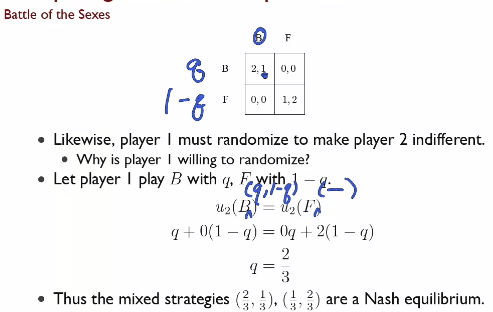
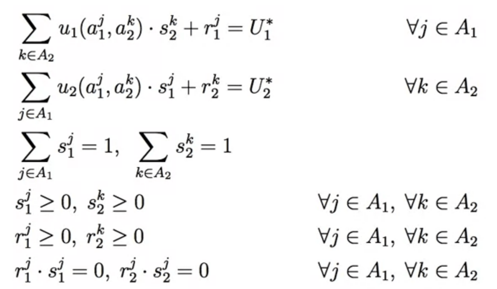
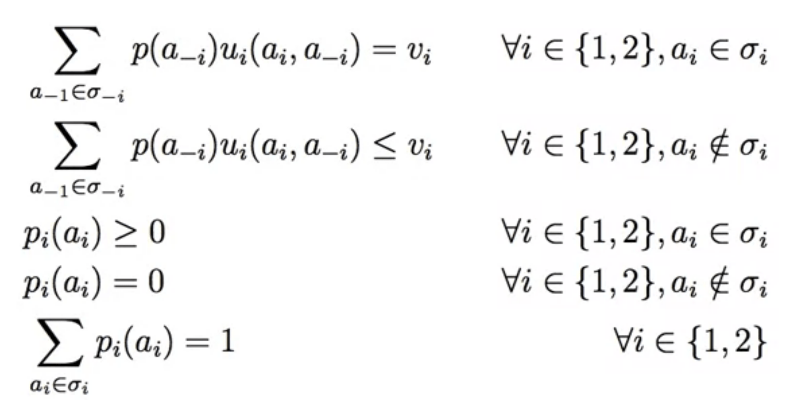
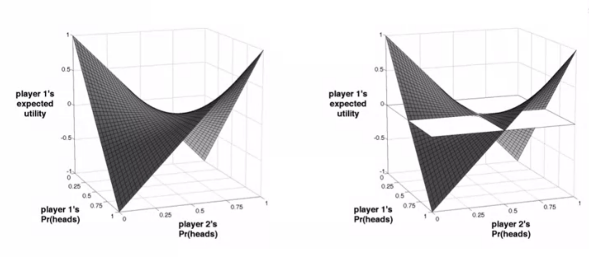
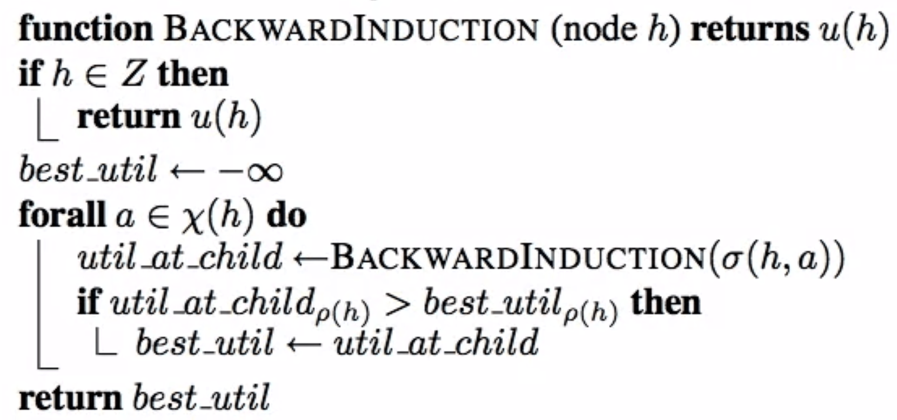
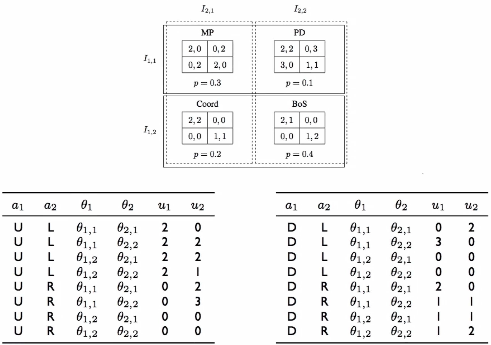

These are my lecture notes on the Stanford coursera course on Game Theory.
A finite Normal Form Game (or Matrix form, strategic form) of \(n\) players is a tuple \(\langle N, A, u\rangle\), where:
- \(N=\{1, \ldots, n\}\) is a finite set denoting the players (indexed by \(i\))
- \(A=A_1 \times \ldots \times A_n\) denotes the action profile where \(A_i\) denotes the action set for player \(i\). Each action \(a_i \in A_i\) is referred to as a pure strategy.
- \(u=(u_1, \ldots, u_n)\) is a profile of utility functions where \(u_i\colon A → \mathbb{R}\) is the utility/payoff function for player \(i\)
A game is finite if it takes a finite amount of time to write down (finite number of players, finite number of actions for every players and therefore a finite number of utility values).
A game of two players is called a game of pure competition when both players have exactly opposed interests, i.e. \(\forall a \in A, u_1(a)+u_2(a) = c\) for some constant \(c\) (special case zero sum games with \(c = 0\)).
A game is referred to as a game of cooperation when all players have the exact same interests, i.e. \(\forall a\in A, \forall i, j, u_i(a) = u_j(a)\).
Strategies
A strategy \(s_i\) for agent \(i\) is a probability distribution over the actions \(A_i\).
A strategy is called pure if only one action is played with positive probability, otherwise the strategy is called mixed. The set of actions with positive probability in a mixed strategy is called the support of the strategy.
Let the set of all strategies for \(i\) be denoted \(S_i\) and the set of all strategy profiles be denoted \(S=S_1\times \ldots \times S_n\).
For players following mixed strategies the payoff is then defined in terms of an expectation:
$$
u_i(s) = \sum_{a\in A} u_i(a) \Pr(a|s)\\
\Pr(a|s) = \prod_{j\in N} s_j(a_j)
$$
where \(s \in S\).
When to play mixed strategies? To confuse opponent (like in matching pennies) or when uncertain about the other's action (like in battle of the sexes).
Best Response
Let \(s_{-i}=\langle s_1, \ldots, s_{i-1}, s_{i+1}, \ldots, s_n\rangle\) so \(s=(s_i, s_{-i})\).
Then the non-unique best response (for pure or mixed strategies) is defined as
$$
s_i^\ast \in BR(s_{-i}) \iff \forall s_i \in S_i, u_i(s_i^\ast, s_{-i}) \le u_i(s_i, s_{-i})
$$
Nash Equilibrium
The Nash equilibrium is a action profile where no player can increase their expected reward by changing his strategy while other players keep theirs unchanged.
\(s=\langle s_1, \ldots, s_n\rangle\) is a Nash equilibrium \(\iff \forall i, s_i \in BR(s_{-i})\).
\(a=\langle a_1, \ldots, a_n\rangle\) is a pure strategy Nash equilibrium \(\iff \forall i, a_i \in BR(a_{-i})\).
(Nash 1950) Every finite game has a Nash equilibrium. (not all games have a pure strategy Nash equilibrium however)
A Nash equilibrium in strictly dominant strategies is unique. Therefore the prisoners dilemma has only a single pure strategy NE and no mixed strategy NEs.
Computing Nash Equilibria
Computing Nash equilibria is hard in general but easy if we can guess (or know) the support.

Note: if the results of the above computation weren't probabilities (in the range \((0, 1)\)) we would know that there exists no equilibrium with the given support.
Current Algorithms (exponential worst case):
- LCP (Linear Complementarity) formulation [Lemke-Howson 1964]

(\(s\) are strategies, \(r\) are slack variables)
- Support Enumeration Method [Porter et al. 2004]:
Enumerate supports using clever heuristics (to curb exponential number of supports) and try to find an equilibrium for the given supports by formulating them as linear programs. A heuristic for searching through different supports is to start by looking at small supports and generally bias our search towards supports that are similar in size for each player.

(sigma is the set of actions in the support for a given player)
Complexity of Finding Nash Equilibria
The decision problem "Does an NE exist" is trivial since by Nash's theorem it is guaranteed to exist. The following decision problems for a game \(G\) however are NP-complete:
- Does a unique NE exist?
- Does a strictly Pareto efficient NE exist?
- Does an NE exist with a guaranteed payoff or guaranteed social welfare?
- Does an NE exist that includes/excludes specific actions?
The complexity of finding a even a single Nash equilibrium is captured by the complexity class Polynomial Parity Arguments on Directed graphs. PPAD is "between P and NP" and was defined by Papadimitriou in 1994.
- FNP problems are constructive versions of NP problems (F stands for functional)
- TFNP is a subclass of FNP for problems for which a solution is guaranteed to exist (T stands for "total")
- PPAD is a subclass of TFNP where the proofs are based on parity arguments in directed graphs
Theorem: Finding a Nash equilibrium is PPAD-complete.
Domination
Let \(s_i\) and \(s_i'\) be two strategies for player \(i\) and let \(S_{-i}\) be the set of all possible strategy profiles for the other players.
Then \(s_i\) strictly dominates \(s_i'\) if \(\forall s_{-i} \in S_{-i}, u_i(s_i, s_{-i}) > u_i(s_i', s_{-i})\).
Furthermore \(s_i\) very weakly dominates \(s_i'\) if \(\forall s_{-i} \in S_{-i}, u_i(s_i, s_{-i}) \ge u_i(s_i', s_{-i})\).
A strategy that dominates all others is called dominant. A strategy profile consisting of dominant strategies for every player must be a Nash equilibrium.
"Dominant strategies are powerful from both an analytical point of view and a player’s perspective. An individual does not have to make any predictions about what other players might do, and still has a well-defined best strategy. [..] A basic lesson from the prisoners’ dilemma is that individual incentives and overall welfare need not coincide."[1].
Pareto Optimality
An outcome \(o\) is said to Pareto-dominate an outcome \(o'\) if for every agent \(o\) is at least as good as \(o'\) and there is some agent who strictly prefers \(o\) over \(o'\).
An outcome is Pareto-optimal if it is not Pareto-dominated by any other outcome. Every outcome in a zero-sum game is Pareto-optimal .
The prisoners dilemma is a dilemma for the exact reason that the Nash equilibrium is the only non-Pareto-optimal outcome. (The outcome most likely to happen is the socially worst outcome)
Iterated Removal of Strictly Dominated Strategies
A strictly dominated strategy (a single specific action) can never be a best reply since no matter the opponents action since the dominating strategy is always strictly better. Therefore we can assume that a rational player would never play this strategy and we can remove it from the game. Furthermore we can also remove pure strategies that are strictly dominated by any mixed strategies. By doing so repeatedly (in any order) we have an iterative procedure to simplify complex games.
Performing this iterative algorithm preserves Nash equilibria since in a Nash equilibrium everybody plays a best reply (and we don't remove best replies). It can therefore be used as a preprocessing step before computing an equilibrium.
If after the procedure only a single action profile remains, that profile is the unique NE of the game and the game is called dominance solvable.
Note: we can also iteratively remove weakly dominated strategies but since those can be best replies we may remove equilibria (at least one equilibrium is preserved) and the order of removal may matter.
Maxmin & Minmax Strategies
The maxmin strategy for player \(i\) is
$$
\arg \max_{s_i} \,\, \min_{s_{-i}} u_i(s_1, s_{-i})
$$
i.e. the strategy that maximizes \(i\)'s worst-case payoff.
The corresponding maxmin value or safety level which is the minimum payoff guaranteed by the maxmin strategy is
$$
\max_{s_i} \, \min_{s_{-i}} u_i(s_1, s_{-i})
$$
The minmax strategy for player \(i\) is
$$
\arg \min_{s_i} \,\, \max_{s_{-i}} u_{-i}(s_i, s_{-i})
$$
i.e. the strategy that minimizes the opponents best-case payoff.
The corresponding minmax value which is the opponents maximum payoff guaranteed by the minmax strategy is
$$
\min_{s_i} \, \max_{s_{-i}} u_{-i}(s_i, s_{-i})
$$
The Minimax Theorem
In any finite, two-player, zero-sum game, in any Nash equilibrium each player receives a payoff that is equal to both his maxmin value and his minmax value. This value is referred to as the value of the game. Furthermore the set of maxmin strategies coincides exactly with the set of minmax strategies and any maxmin/minmax strategy profiles are Nash equilibria.
The minimax theorem shows us that we can easily find NE for two-player zero-sum games by solving the corresponding minmax problem.
The minmax problem for 2x2 games can be solved by writing down and solving the corresponding maxmin value equations for each player.
The general minmax problem for two players is easily solvable with LP. \(U_1^\ast\) is the value of the game (the payoff to player 1 in equilibrium), \(s_2\) is the mixed strategy for player 2 that we want to find, \(k\) is a pure strategy.
The minmax problem for matching pennies:

A correlated equilibrium is a randomized assignment of (potentially correlated) action recommendations to agents, such that nobody wants to deviate.
A correlated equilibrium is a generalization of Nash equilibria since any Nash equilibrium can be expressed as a correlated equilibrium where action recommendations are not correlated.
A CE can for example be used to achieve fair and optimal outcomes in the Battle of the Sexes game.
Extensive form games are an alternative representation of games that makes their temporal structure (sequence/time) explicit.
A (finite) perfect-information game is defined by the tuple \((N, A, H, Z, \chi, \rho, \sigma, u)\), where
- \(N\) is a set of \(n\) players.
- \(A\) is a set of actions (not action profiles like in normal form games)
- \(H\) is a set of choice nodes
- \(\chi\) is the action function \(\chi\colon H \rightarrow 2^A\) that assigns a set of possible actions to each choice node
- \(\rho\) is the player function \(\rho \colon H → N\) that assigns a player \(i \in N\) to each choice node (that player that makes that choice)
- \(Z\) is a set of terminal nodes (disjoint from \(H\))
- \(\sigma\) is the successor function \sigma \colon H \times A → H \cup Z that assigns a next choice or terminal node to a choice and action pair (such that the node graph is a tree)
- \(u\) is a utility function \((u_1, \ldots, u_n)\) where \(u_i \colon Z → \mathbb{R}\) is a utility function for player \(i\) on the terminal nodes \(Z\)
The set of pure strategies for player \(i\) is the set
$$
\times_{h \in H, \rho(h) =i} \chi(h)
$$
where \(\times\) is the generalized cross-product.
Theorem: Every perfect information game in extensive form has a PSNE. (In normal form games some games only have mixed strategy Nash equilibria but in extensive form perfect information games due to the sequential nature of the moves and having perfect information, randomization is never a useful strategy)
Subgame Perfection
The subgame of \(G\) rooted at \(h\) is the restriction of \(G\) to the descendents of \(H\).
The set of subgames of \(G\) is the set of subgames of \(G\) rooted at each of the nodes in \(G\).
A Nash equilibrium \(s\) is a subgame perfect equilibrium of \(G \iff\) for any subgame \(G'\) of \(G\), the restriction of \(s\) to \(G'\) is a Nash equilibrium of \(G'\).
Every finite extensive form game with perfect recall has a subgame perfect equilibrium.
Computing Subgame Perfect Equilibria
Backwards induction is a recursive algorithm to find subgame perfect equilibria. It starts at any node \(h\) (e.g. the root of the game) and recursively finds an equilibrium for all its subgames and then the entire game (rooted at \(h\)).
The algorithm below simply computes the payoff under the equilibrium strategy but can be extended to compute the strategy itself. (The function labels each node with a utility vector, the labeling can be seen as an extension of the game's utility function to the non-terminal nodes)

For zero-sum games backwards induction is referred to as the minimax algorithm. The minimax algorithm can be sped up by removing nodes that will never be reached in play (alpha-beta pruning).
A (finite) imperfect-information game is defined by the tuple \((N, A, H, Z, \chi, \rho, \sigma, u, I)\) where \((N, A, H, Z, \chi, \rho, \sigma, u)\) is a perfect-information game and \(I = (I_1, \ldots, I_n)\), where \(I_i = (I_{i, 1}, \ldots, I_{i, k_i})\) is a partition of player \(i\)'s choice nodes. Each \(I_{i, j}\) contains one or more choice nodes such that for \(h, h' \in I_{i, j}\) it holds that \(\chi(h) = \chi(h')\) and \(\rho(h) = \rho(h')\). This ensures that players are unable to distinguish these nodes via available actions in the node or via different players playing those nodes. Note that if each \(I_{i, j}\) contains only a single element the game is a perfect information game.
The set of pure strategies for player \(i\) is the set
$$
\times_{I_{i, j} \in I_i} \chi(I_{i, j})
$$
where \(\times\) is the generalized cross-product.
All extensive form games can be converted to an equivalent normal form game. The induced normal form games are generally exponentially larger than the associated extensive-form games. To convert an EF game to normal form simply create a normal form game with the pure strategies in the EF game (as above) as actions in the normal form game, then fill out the matrix with the corresponding outcomes.
Not all normal form games can be converted to perfect information extensive form games due to their nonsequential nature (e.g. matching pennies) but they can always be converted to imperfect information extensive form games.
Performing the conversion NF → IIEF → NF may not return the same game but always returns an equivalent game with the same strategy spaces and equilibria.
Perfect Recall
An imperfect information game is said to have perfect recall if any agent in any information set knows all previously visited information sets and actions they have previously taken.
Behavioral Strategies
In perfect information games and imperfect information games with perfect recall, mixed strategies and behavioral strategies can emulate each other. Otherwise behavioral strategies can offer ways of playing a game that can not be done with mixed strategies.
A mixed strategy in imperfect information games is a probability distribution over pure strategies. Considering a single information set, mixed strategies assign a probability to every action available at nodes in that set. Before the game is played a concrete pure strategy is sampled from the the mixed strategy which is then executed. Notice that this entails the constraint that the agent plays the same action at every node in an information set (actions are not resampled when moving from one node to another node in the same information set).
Behavioral strategies are also probability distributions over pure strategies but they resample from the distribution every time they make a move. Behavioral strategies can have equilibria that are different from equilibria in mixed strategies.
Beyond Subgame Perfection
In incomplete information games there may not be any proper subgames: In the following example the only subgame is the game itself since both player-two choices are in the same information set and therefore not disconnected subgames. In this case subgame perfect equilibria are just general Nash equilibria.
Note: The N choice at the top stands for nature and injects randomization into the game
Here \((S→N, W→N; \,F)\) is an equilibrium even though the off-the-equilibrium-path action \(F\) for player two is a non-credible threat. (It is still a nash equilibrium because if player 1 truly believes player 2 is going to play \(F\) and player 2 truly believes player 1 is going to play \(S→N, W→N\) neither player has an incentive to change their action)
\((S→E, W→N; A)\) is another (a more credible) Nash equilibrium.
Other equilibrium concepts (sequential equilibrium, perfect bayesian equilibrium) explicitly model players' beliefs about the current state of the game and may be better suited for these kinds of games.
Repeated Games
A repeated game is a game where a single normal form game is played repeatedly for a finite or infinite number of times.
Utility in Infinitely Repeated Games
Given an infinite sequence of payoffs \((r_j)_{j=1}^\infty\) for player \(i\) the average reward is
$$
\lim_{k→\infty} \sum_{j=1}^k \frac{r_j}{k}
$$
and the future discounted reward with a discount factor of \(0 < \beta < 1\) is
$$
\sum_{j=1}^\infty \beta^jr_j
$$
The discount factor can be interpreted as expressing that the agent prefers present rewards over future rewards. The future discounted reward is equivalent to the expected reward in a game where the agent cares equally about present and future rewards but there is a probability of \(1-\beta\) that the game ends in any given round.
Stochastic Games
A stochastic game is a generalization of repeated games. In a stochastic game players play games from a given set of normal form games and can transition to playing another game depending on the previous game played and all the actions taken by the players.
A stochastic game is a tuple \((Q, N, A, P, R)\) where
- \(Q\) is a finite set of states (these implicitly define multiple games)
- \(N\) is a finite set of \(n\) players
- \(A=A_1 \times \ldots \times A_n\) is an action profile where \(A_i\) is the set of actions available to player \(i\)
- \(P\colon Q \times A \times Q \rightarrow [0, 1]\) is a transition probability function where \(P(q, a, \hat q)\) is the probability of transitioning from state \(q\) to state \(\hat q\) after executing action profile \(a\)
- \(R=r_1, \ldots, r_n\) where \(r_i\colon Q \times A → \mathbb{R}\) is a real valued payoff function for player \(i\)
This definition assumes that all games have the same strategy space (otherwise just more notation).
Stochastic games generalize Markov Decision Processes since an MDP is a single-agent stochastic game.
Fictitious Play
Let \(w(a)\) be the number of times the opponent has played action \(a\) and initialize \(w(a)\) with a zero or non-zero value. Assess opponent's strategy using
$$
\sigma(a) = \frac{w(a)}{\sum_{a'\in A} w(a')}
$$
and best respond to the mixed strategy given by \(\sigma\).
Theorem: If the empirical distribution of each player's strategies (e.g. percentage of head/tails in matching pennies) converges in fictitious play, then it converges to a Nash equilibrium.
Note that the strategies played by each player may not converge to a single strategy.
Each of the following are sufficient conditions for the empirical frequencies of play to converge in fictitious play:
- The game is zero-sum
- The game is dominance-solvable
- The game is a potential game
- The game is \(2\times n\) and has generic payoffs
No-regret Learning
Define the regret an agent experiences at time \(t\) for not having played \(s\) as the differences between the received reward and reward that the agent would have received under strategy \(s\):
$$
R^t(s) = \alpha^t - \alpha^t(s)
$$
A learning rule exhibits no regret if for any pure strategy \(s\) it holds that \(\Pr([\lim_{t→\infty} \inf R^t(s)] \le 0) = 1\) (in the limit the regret tends to zero).
Regret Matching
Regret matching is a no regret learning rule where the agent plays with probability proportional to its regret for not playing that action in the past.
See this for more information.
Regret matching converges to a correlated equilibrium for finite games.
Pure Strategies and Equilibria in Repeated Games
A pure strategy in an infinitely repeated game is a choice of action at every round. Therefore there are infinitely many pure strategies in infinitely repeated games and there may also be infinitely many pure strategy Nash equilibria.
Since Nash's theorem only applies to finite games, there may not be any Nash equilibria in IRGs.
Finding Nash equilibria in IRGs is difficult but the Folk theorem tells us a way to identify which payoff profiles are generated by a Nash equilibrium.
Payoff Profiles
Consider an \(n\)-player game \(G=(N, A, u)\) and any payoff vector \(r = (r_1, \ldots, r_n)\). Let \(v_i\) be player \(i\)'s minmax value.
A payoff profile \(r\) is enforceable if \(r_i \ge v_i\).
A payoff profile \(r\) is feasible (actually achievable on average in a concrete game) if \(r\) can expressed as a convex rational combination of outcomes i.e. there exist rational \(0 \le \alpha_a \le 1\) with \(\sum_{a \in A} \alpha_a = 1\) such that \(r = \sum_{a\in A} \alpha_a u_i(a)\). Note that this is defined for all players simultaneously and that the alphas must be the same for each player.
Folk Theorem for IR games with Average Rewards
Given any \(n\)-player game consider a payoff profile \((r_1, \ldots, r_n)\)
- If \(r\) is the payoff in any Nash equilibrium then it is enforceable.
- If \(r\) is both feasible and enforceable it is the payoff in some Nash equilibrium.
Note that above theorem does not state that a payoff profile in an equilibrium is necessarily feasible. This is because it may not be expressible as a rational convex combination.
See the lecture for the full proof. Short summary of proof
- Proof by contradiction: Playing the minmax strategy would be a profitable deviation from the Nash equilibrium (contradiction!) since the Nash equilibrium's reward profile is enforceable.
- By exploiting the rationality in the definition of feasibility we can construct simple strategies for all players that lead exactly to the given reward profile. Furthermore we make the strategies be trigger strategies so that when any player deviates from their strategy the others punish him and he will receive at most his minmax value. Because the reward profile is enforceable deviating from the strategy is not a profitable deviation for any player and the strategy is a therefore Nash equilibrium.
Games with Discounted Rewards
We consider stage games of the form \((N, A, u)\) with discount factors \(\beta_1 = \ldots = \beta_n = \beta\). The payoff from a sequence of actions \((a_t)_t\) is \(\sum_t \beta_i^t u_i(a_t)\).
The set of finite histories is \(H=\bigcup_tH^t\) where \(H^t = \{h^t : h^t \in A^t\}\) is the set of histories of length \(t\). A strategy is a function \(s_i \colon H → \Delta(A_i)\).
A strategy profile is a subgame perfect Nash equilibrium if it is Nash in every subgame where a subgame in infinitely repeated games is defined as the game starting at any specific round.
Repeatedly playing the stage game NE is always a subgame perfect equilibrium (by backward induction) and is the unique subgame perfect equilibrium if the stage game has a unique NE.
Folk Theorem for IR games with Discounted Rewards
Let \(a=(a_1, \ldots, a_n)\) be a Nash equilibrium of the stage game.
If there exists an \(a' = (a'_1, \ldots a'_n)\) such that all \(u_i(a') > u_i(a)\) then there exists a discount factor \(\beta < 1\), such that if all \(\beta_i \ge \beta\), then there exists a subgame perfect equilibrium for the IR game where \(a'\) is played in every period (as long as we're on the equilibrium path).
Note: the equilibrium strategy is a grim trigger strategy, meaning it plays \(a'\) as long as no one deviates and switches to forever playing \(a\) otherwise. Not playing \(a'\) is then never a profitable deviation for any player as long as \(\beta\) is large enough (if players don't care about future rewards enough, they don't care if we punish them by playing \(a\) instead of \(a'\)).
Bayesian Games
Unlike perfect information games, Bayesian games (sometimes called games of incomplete information) can model agents' uncertainty in their and other players payoffs/utility functions.
A Bayesian game (defined via information sets) is a tuple \((N, G, P, I)\) where
- \(N\) is a set of players
- \(G\) is a set of games with identical strategy spaces and players \(N\) (they differ only in their utility functions)
- \(\Pi(G)\) is the set of probability distributions over games in \(G\) and \(P \in \Pi(G)\) is a common prior
- I=(I_1, \ldots, I_n) is a set of partitions of \(G\), one for each agent
where games in the same information set \(I_{i, j}\) of \(I_i\) are indistinguishable for agent \(i\). Note that players have access to all information in the \((N,G,P,I)\) tuple, they just don't know which game is being played.
Agents' beliefs are posteriors, obtained by conditioning the common prior \(P\) on individual private signals.
Definition via Epistemic Types
A Bayesian game (defined via epistemic types) is a tuple \((N, A, \Theta, p, u)\) where
- \(N\) is a set of agents
- \(A=(A_1, \ldots, A_n)\), where \(A_i\) is the sets of actions for player \(i\)
- \(\Theta = (\Theta_1, \ldots, \Theta_n)\), where \(\Theta_i\) is the type space of player \(i\)
- \(p\colon \Theta → [0, 1]\) is a common prior
- \(u=(u_1, \ldots, u_n)\), where \(u_i\colon A \times \Theta → \mathbb{R}\) is the utility function for player \(i\)
An agent's type consists of all information and beliefs the agent has that is not common knowledge.

Bayesian Nash Equilibrium
A pure strategy is a function \(s_i\colon \Theta → A_i\).
A mixed strategy is a function \(s_i\colon \Theta → \Pi(A_i)\).
\(s_i(a_i | \theta_i)\) is the probability that agent \(i\) plays action \(a_i\) under the mixed strategy \(s_i\) given that his type is \(\theta_i\).
Kinds of expected utility (\(EU\))
- ex-ante: the agent knows nothing about anyone's actual type
- interim: the agent only knows their actual type
- ex-post: the agent knows all agent's actual types
The interim expected utility for player \(i\) is:
$$
EU_i(s|\theta_i) = \sum_{\theta_{-i} \in \Theta_{-i}} p(\theta_{-i}|\theta_i) \sum_{a \in A} \left( \prod_{j\in N} s_j(a_j| \theta_j) \right) u_i(a, \theta_i, \theta_{-i})
$$
The ex-ante expected utility for player \(i\) is:
$$
EU_i(s) = \sum_{\theta_i \in \Theta_i} p(\theta_i) EU_i(s | \theta_i)
$$
A Bayesian Nash equilibrium is a mixed strategy profile \(s\) such that each player plays a best response, i.e for each \(i\) and \(\theta_i \in \Theta_i\):
$$
s_i \in \arg \max_{s_i'} EU_i(s_i', s_{-i}, \theta_i)
$$
This interim maximization based definition is equivalent to the ex-ante based formulation if all \(p(\theta_i) > 0\)
$$
s_i \in \arg \max_{s_i'} EU_i(s_i', s_{-i})
$$
since maximizing the \(EU\) for each type also maximizes their weighted average and not maximizing the \(EU\) for any type that has nonzero probability doesn't maximize the average. (?)
See this example.
References
- Jackson, Matthew O., A Brief Introduction to the Basics of Game Theory (December 5, 2011